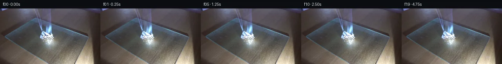

![首帧]()

Round 00
2026-11-05T06:41:42.083474+00:00像素候选变化代码 +236/−0inspection 更新
pixels 85ae3004283a592d · code 778e96dea7a9976a
查看本轮 generate.py 真实 diff
--- previous/generate.py
+++ current/generate.py
@@ -0,0 +1,236 @@
+#!/usr/bin/env python3
+"""Generate a deterministic 20-frame pixel continuation of the burning-paper shot."""
+
+from pathlib import Path
+import math
+import numpy as np
+from PIL import Image, ImageDraw, ImageFilter
+
+from artifact_io import save
+
+
+ROOT = Path(__file__).resolve().parent
+W, H = 256, 144
+SS = 4
+RESAMPLE = Image.Resampling.LANCZOS
+
+
+def soft_mask(draw_fn, blur=0.0):
+ """Draw a supersampled grayscale mask and return a float alpha array."""
+ im = Image.new("L", (W * SS, H * SS), 0)
+ d = ImageDraw.Draw(im)
+ draw_fn(d)
+ if blur:
+ im = im.filter(ImageFilter.GaussianBlur(blur * SS))
+ im = im.resize((W, H), RESAMPLE)
+ return np.asarray(im, dtype=np.float32) / 255.0
+
+
+def composite(frame, color, alpha):
+ a = np.clip(alpha, 0.0, 1.0)[..., None]
+ return frame * (1.0 - a) + np.asarray(color, np.float32) * a
+
+
+def screen_glow(frame, color, alpha):
+ a = np.clip(alpha, 0.0, 1.0)[..., None]
+ c = np.asarray(color, np.float32) / 255.0
+ unit = frame / 255.0
+ screened = 1.0 - (1.0 - unit) * (1.0 - c)
+ return (unit * (1.0 - a) + screened * a) * 255.0
+
+
+def radial(cx, cy, rx, ry, power=2.0):
+ yy, xx = np.mgrid[0:H, 0:W]
+ r = ((xx - cx) / rx) ** 2 + ((yy - cy) / ry) ** 2
+ return np.clip(1.0 - r, 0.0, 1.0) ** power
+
+
+def smoke_layer(frame, t):
+ """Layer several continuously rising, translucent smoke filaments."""
+ phase = t * 0.54
+ layers = [
+ (-0.3, 0.55, 1.25, 0.115),
+ (1.8, 1.15, 0.72, 0.085),
+ (-2.0, 2.10, 0.47, 0.060),
+ ]
+ for offset, local_phase, width_scale, opacity in layers:
+ def draw_path(d, offset=offset, local_phase=local_phase, width_scale=width_scale):
+ points = []
+ # Draw bottom-to-top: apparent upward transport is encoded by phase.
+ for y in np.linspace(68, -10, 118):
+ rise = 68.0 - y
+ drift = -0.118 * rise
+ curl = (2.4 + 0.032 * rise) * math.sin(
+ 0.105 * rise + phase + local_phase
+ )
+ fine = 1.25 * math.sin(0.235 * rise - phase * 1.7 + local_phase)
+ x = 118.0 + offset + drift + curl + fine
+ points.append((round(x * SS), round(y * SS)))
+ d.line(points, fill=255, width=max(2, round(width_scale * SS)))
+
+ filament = soft_mask(draw_path, blur=1.2 + 0.65 * width_scale)
+ # Smoke becomes more diffuse and less opaque with height.
+ yy = np.arange(H, dtype=np.float32)[:, None]
+ vertical = np.clip((73.0 - yy) / 68.0, 0.0, 1.0)
+ vertical = 0.68 + 0.32 * (1.0 - vertical)
+ pulse = 0.92 + 0.10 * math.sin(phase * 0.73 + local_phase)
+ alpha = filament * opacity * vertical * pulse
+ frame = composite(frame, (224, 235, 239), alpha)
+
+ # Fresh compact smoke is visibly white directly above the paper.
+ puff_phase = phase * 1.35
+
+ def draw_puffs(d):
+ for k in range(5):
+ age = (k / 5.0 + (t * 0.115)) % 1.0
+ y = 66.0 - age * 30.0
+ x = 117.0 - age * 3.5 + 2.2 * math.sin(puff_phase + k * 1.71)
… diff truncated; 149 more lines …